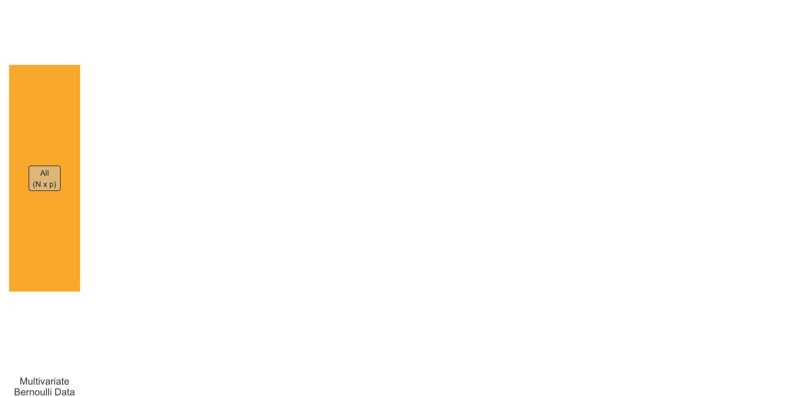

Weighted pairwise likelihood and limited information goodness-of-fit tests for binary factor models
Adolphe Quetelet Seminar Series, Ghent University
Haziq Jamil ![]()
Assistant Professor in Statistics, Universiti Brunei Darussalam
Visiting Fellow, London School of Economics and Political Science
April 15, 2024
References

Bartholomew, David J, and Shing On Leung. 2002. “A Goodness of Fit Test for Sparse 2p Contingency Tables.” British Journal of Mathematical and Statistical Psychology 55 (1): 1–15.
Katsikatsou, Myrsini, Irini Moustaki, Fan Yang-Wallentin, and Karl G Jöreskog. 2012. “Pairwise Likelihood Estimation for Factor Analysis Models with Ordinal Data.” Computational Statistics & Data Analysis 56 (12): 4243–58.
Maydeu-Olivares, Alberto, and Harry Joe. 2005. “Limited- and Full-Information Estimation and Goodness-of-Fit Testing in \(2^n\) Contingency Tables: A Unified Framework.” Journal of the American Statistical Association 100 (471): 1009–20.
———. 2008. “An Overview of Limited Information Goodness-of-Fit Testing in Multidimensional Contingency Tables.” New Trends in Psychometrics, 253–62.
Muthén, Bengt O., and Albert Satorra. 1995. “Complex Sample Data in Structural Equation Modeling.” Sociological Methodology 25: 267–316. https://doi.org/10.2307/271070.
Reiser, Mark. 1996. “Analysis of Residuals for the Multionmial Item Response Model.” Psychometrika 61: 509–28.
Skinner, C. J. 1989. “Domain Means, Regression and Multivariate Analysis.” In Analysis of Complex Surveys, edited by C. J. Skinner, D. Holt, and T. M. F. Smith, 59–87. Wiley Series in Probability and Mathematical Statistics. Chichester; New York: Wiley.
Varin, Cristiano, Nancy Reid, and David Firth. 2011. “An Overview of Composite Likelihood Methods.” Statistica Sinica, 5–42.